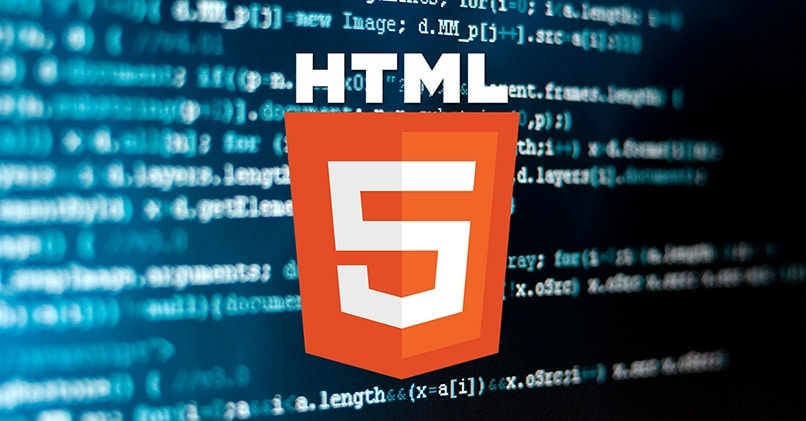
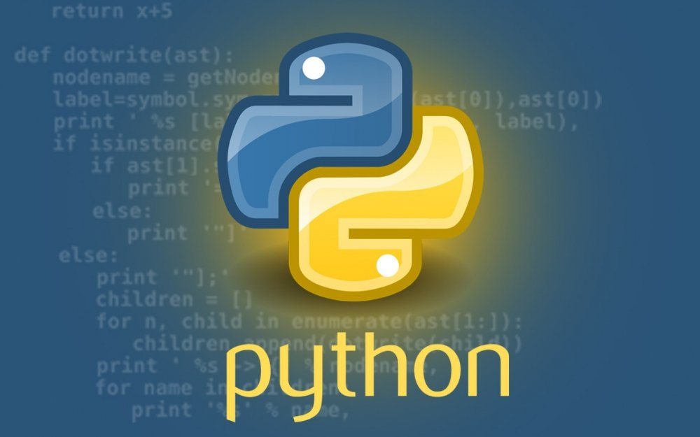
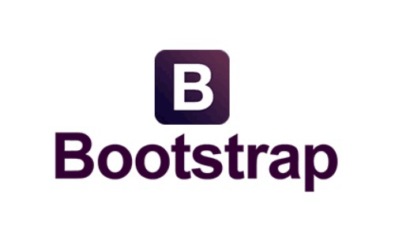
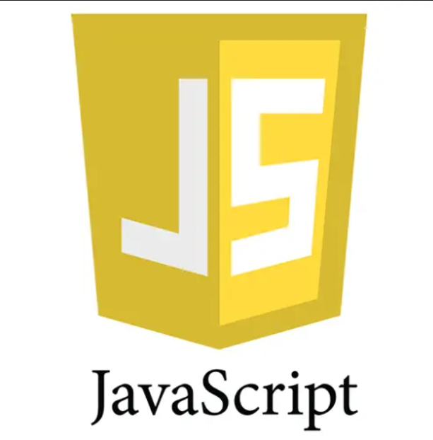

Hozirgacha o'rganganlarim!

1980-yil | HTML,Tim Bеrnеrs tomonidan yaratilgan
HTML (inglizcha: Hypertext Markup Language — hipermatnli belgilash tili) — SGML (Standard Generalized Markup Language — standart umumlashtirilgan belgilash tili) ga asoslangan va xalqaro ISO 8879 standartiga mos keluvchi til ishlatiladi

1996-yil |CSS,
CSS veb-sahifaning tashqi ko'rinishi va hissi bilan ishlov beradi. CSSdan foydalanib, siz matnning rangini, shriftlarning uslubini, paragraflar orasidagi bo'shliqni, ustunlarning o'lchamlari va joylashishini, fon rasmlari yoki ranglarning qanday ishlatilishini.

2012-yil | Figma, Диланом Филдом
Figma real vaqt rejimida hamkorlikni tashkil qilish imkoniyatiga ega interfeyslarni ishlab chiqish va prototiplash uchun onlayn xizmatdir. Xizmat obuna bo'yicha mavjud, bitta foydalanuvchi uchun bepul tarif rejasi mavjud. Windows, macOS uchun oflayn versiyalari mavjud.
Endi o'rganadiganlarim!

1980-yil | PHYTON,Tim Bеrnеrs
Python – bu o’rganishga oson va shu bilan birga imkoniyatlari yuqori bo’lgan oz sonlik dasturlash tillari qatoriga kiradi. Va shu bilan birga unda dasturlash juda ham yoqimlik. Rasmiy sayt – www.python.org Python dasturlash tili muallifi – Gvido van Rossum (Гвидо ван Россум)

1996-yil |BOOTSTRAP,
Bootstrap (talaffuzi: Butstrap) — bu mobil qurilmalar uchun moslashuvchan hamda front-end dasturlash uchun moʻljallangan bepul va ochiq kodli CSS freymvorki. Bu freymvork tipografiya, formalar, tugmalar va h.k.z

2012-yil | JAVA SCRIPT, Диланом Филдом
JavaScript nima? Bu savolga har xil javob berish mumkin. Bu dasturlash tili, to‘g‘rirog‘i veb dasturlash tili, undan ham to‘g‘rirog‘i klient tomonda ishlaydigan dasturlash tili, ya’ni bu veb dasturlash tili ishlashi uchun hech qanday server kerak emas, oddiy brauzerda ishlayveradi..